ℹ Using "','" as decimal and "'.'" as grouping mark. Use `read_delim()` for more control.
Rows: 395 Columns: 33
── Column specification ────────────────────────────────────────────────────────
Delimiter: ";"
chr (17): school, sex, address, famsize, Pstatus, Mjob, Fjob, reason, guardi...
dbl (16): age, Medu, Fedu, traveltime, studytime, failures, famrel, freetime...
ℹ Use `spec()` to retrieve the full column specification for this data.
ℹ Specify the column types or set `show_col_types = FALSE` to quiet this message.
port_data <-read_csv2("student-por.csv")
ℹ Using "','" as decimal and "'.'" as grouping mark. Use `read_delim()` for more control.
Rows: 649 Columns: 33── Column specification ────────────────────────────────────────────────────────
Delimiter: ";"
chr (17): school, sex, address, famsize, Pstatus, Mjob, Fjob, reason, guardi...
dbl (16): age, Medu, Fedu, traveltime, studytime, failures, famrel, freetime...
ℹ Use `spec()` to retrieve the full column specification for this data.
ℹ Specify the column types or set `show_col_types = FALSE` to quiet this message.
Inner join with all variabels causes a ‘many to many’ relationship between x and y.
join_test <-inner_join(math_data, port_data, by =join_by(school == school, sex == sex, age == age, address == address, famsize == famsize, Pstatus == Pstatus, Medu == Medu, Fedu == Fedu, reason == reason, nursery == nursery, internet == internet)) |>collect()
Warning in inner_join(math_data, port_data, by = join_by(school == school, : Detected an unexpected many-to-many relationship between `x` and `y`.
ℹ Row 10 of `x` matches multiple rows in `y`.
ℹ Row 45 of `y` matches multiple rows in `x`.
ℹ If a many-to-many relationship is expected, set `relationship =
"many-to-many"` to silence this warning.
math_data <- math_data |>mutate(guardianF =as.factor(guardian), # who's their parentinternetF =as.factor(internet), # access to internet at homehealthF =as.factor(health), # current health statushigherF =as.factor(higher)) # wants to take higher educationprint(math_data)
# A tibble: 395 × 37
school sex age address famsize Pstatus Medu Fedu Mjob Fjob reason
<chr> <chr> <dbl> <chr> <chr> <chr> <dbl> <dbl> <chr> <chr> <chr>
1 GP F 18 U GT3 A 4 4 at_home teach… course
2 GP F 17 U GT3 T 1 1 at_home other course
3 GP F 15 U LE3 T 1 1 at_home other other
4 GP F 15 U GT3 T 4 2 health servi… home
5 GP F 16 U GT3 T 3 3 other other home
6 GP M 16 U LE3 T 4 3 services other reput…
7 GP M 16 U LE3 T 2 2 other other home
8 GP F 17 U GT3 A 4 4 other teach… home
9 GP M 15 U LE3 A 3 2 services other home
10 GP M 15 U GT3 T 3 4 other other home
# ℹ 385 more rows
# ℹ 26 more variables: guardian <chr>, traveltime <dbl>, studytime <dbl>,
# failures <dbl>, schoolsup <chr>, famsup <chr>, paid <chr>,
# activities <chr>, nursery <chr>, higher <chr>, internet <chr>,
# romantic <chr>, famrel <dbl>, freetime <dbl>, goout <dbl>, Dalc <dbl>,
# Walc <dbl>, health <dbl>, absences <dbl>, G1 <dbl>, G2 <dbl>, G3 <dbl>,
# guardianF <fct>, internetF <fct>, healthF <fct>, higherF <fct>
port_data <- port_data |>mutate(guardianF =as.factor(guardian), # who's their parentinternetF =as.factor(internet), # access to internet at homehealthF =as.factor(health), # current health statushigherF =as.factor(higher)) # wants to take higher educationprint(port_data)
# A tibble: 649 × 37
school sex age address famsize Pstatus Medu Fedu Mjob Fjob reason
<chr> <chr> <dbl> <chr> <chr> <chr> <dbl> <dbl> <chr> <chr> <chr>
1 GP F 18 U GT3 A 4 4 at_home teach… course
2 GP F 17 U GT3 T 1 1 at_home other course
3 GP F 15 U LE3 T 1 1 at_home other other
4 GP F 15 U GT3 T 4 2 health servi… home
5 GP F 16 U GT3 T 3 3 other other home
6 GP M 16 U LE3 T 4 3 services other reput…
7 GP M 16 U LE3 T 2 2 other other home
8 GP F 17 U GT3 A 4 4 other teach… home
9 GP M 15 U LE3 A 3 2 services other home
10 GP M 15 U GT3 T 3 4 other other home
# ℹ 639 more rows
# ℹ 26 more variables: guardian <chr>, traveltime <dbl>, studytime <dbl>,
# failures <dbl>, schoolsup <chr>, famsup <chr>, paid <chr>,
# activities <chr>, nursery <chr>, higher <chr>, internet <chr>,
# romantic <chr>, famrel <dbl>, freetime <dbl>, goout <dbl>, Dalc <dbl>,
# Walc <dbl>, health <dbl>, absences <dbl>, G1 <dbl>, G2 <dbl>, G3 <dbl>,
# guardianF <fct>, internetF <fct>, healthF <fct>, higherF <fct>
combined_data <- combined_data |>mutate(guardianF =as.factor(guardian), # who's their parentinternetF =as.factor(internet), # access to internet at homehealthF =as.factor(health), # current health statushigherF =as.factor(higher), # wants to take higher educationMedu =as.character(Medu),Fedu =as.character(Fedu),traveltime =as.character(traveltime),studytime =as.character(studytime),failures =as.character(failures),famrel =as.character(famrel),freetime =as.character(freetime),goout =as.character(goout),Dalc =as.character(Dalc),Walc =as.character(Walc))print(combined_data)
# A tibble: 320 × 42
school sex age address famsize Pstatus Medu Fedu Mjob Fjob reason
<chr> <chr> <dbl> <chr> <chr> <chr> <chr> <chr> <chr> <chr> <chr>
1 GP F 18 U GT3 A 4 4 at_home teach… course
2 GP F 17 U GT3 T 1 1 at_home other course
3 GP F 15 U GT3 T 4 2 health servi… home
4 GP F 16 U GT3 T 3 3 other other home
5 GP M 16 U LE3 T 4 3 services other reput…
6 GP M 16 U LE3 T 2 2 other other home
7 GP F 17 U GT3 A 4 4 other teach… home
8 GP M 15 U LE3 A 3 2 services other home
9 GP M 15 U GT3 T 3 4 other other home
10 GP F 15 U GT3 T 4 4 teacher health reput…
# ℹ 310 more rows
# ℹ 31 more variables: guardian <chr>, traveltime <chr>, studytime <chr>,
# failures <chr>, schoolsup <chr>, famsup <chr>, paid.x <chr>,
# activities <chr>, nursery <chr>, higher <chr>, internet <chr>,
# romantic <chr>, famrel <chr>, freetime <chr>, goout <chr>, Dalc <chr>,
# Walc <chr>, health <dbl>, absences.x <dbl>, G1.x <dbl>, G2.x <dbl>,
# G3.x <dbl>, paid.y <chr>, absences.y <dbl>, G1.y <dbl>, G2.y <dbl>, …
Task 2: Summarize the Categorical Data
Investigating NAs: website claims no missing values, which is confirmed here. Additionally the combined_data tibble looks correctly formatted.
, , = 1
no yes
father 0 5
mother 4 35
other 0 0
, , = 2
no yes
father 2 7
mother 2 20
other 0 3
, , = 3
no yes
father 3 13
mother 13 38
other 0 3
, , = 4
no yes
father 1 11
mother 8 35
other 0 0
, , = 5
no yes
father 4 28
mother 11 71
other 0 3
Creating two way table using filtering. There are 102 people who report good health and internet access.
Creating a two way table using subset of three way. There are 71 people who report their guardian as mother and have very good health while having access to home internet.
Finding measures of center and spread with filter subset. It appears absences has an outlier as the mean is further from the median compared to other variables.
Finding measures of center and spread across a single grouping. The numbers between the two groups remain relatively similar to each other with the grouping.
Finding measures of center and spread across two groupings. Interesting that the group with the largest mean absences is not interested in higher education.
Histogram of age and absenses by internet access. Here we see that both age and absences are skewed right, with absences more extreme than age.
ggplot(data = combined_data, aes(x = age, fill = internetF)) +geom_histogram() +labs(x ="Age", title ="Age and Internet Access") +scale_fill_discrete("Internet Access")
`stat_bin()` using `bins = 30`. Pick better value with `binwidth`.
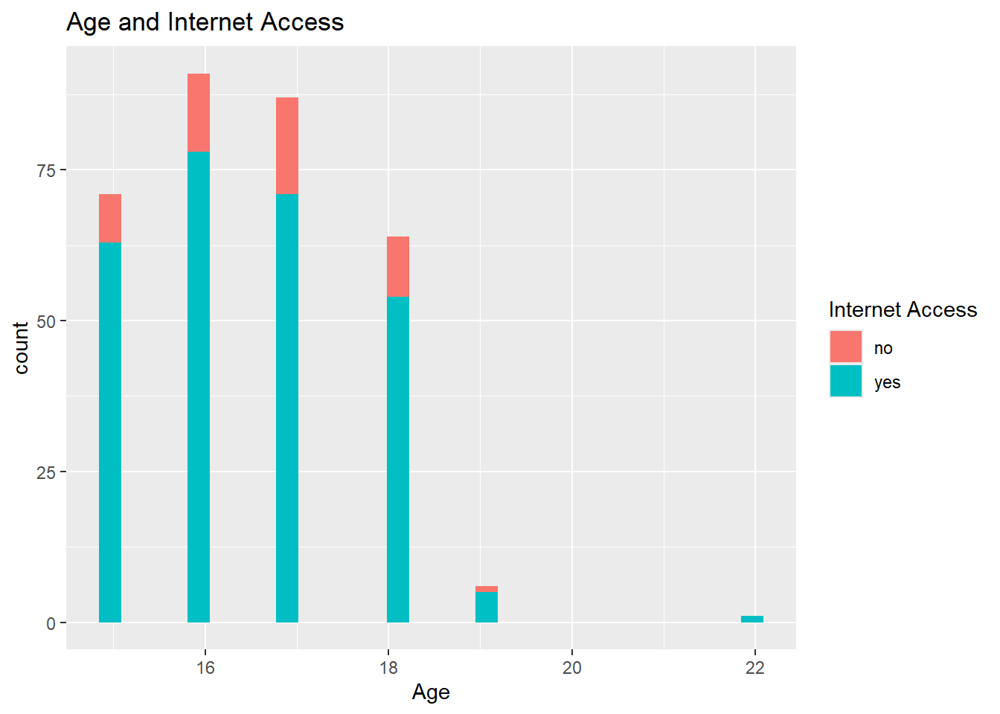
ggplot(data = combined_data, aes(x = absences.x, fill = internetF)) +geom_histogram() +labs(x ="Absenses", title ="Absenses and Internet Access") +scale_fill_discrete("Internet Access")
`stat_bin()` using `bins = 30`. Pick better value with `binwidth`.
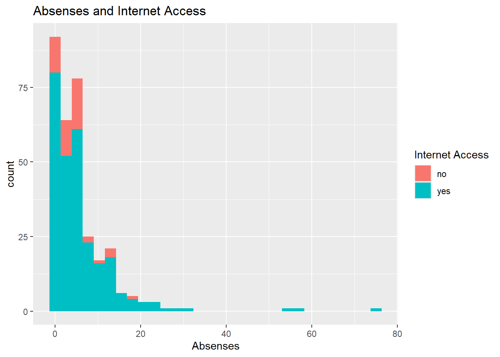
Kernel density plot of age and absenses by internet access. It’s interesting that the troughs are more intense in the age plot representing people that have internet access over doesn’t have internet access.
ggplot(data = combined_data, aes(x = age, fill = internetF)) +geom_density(alpha =0.5) +labs(x ="Age", title ="Age and Internet Access") +scale_fill_discrete("Internet Access")
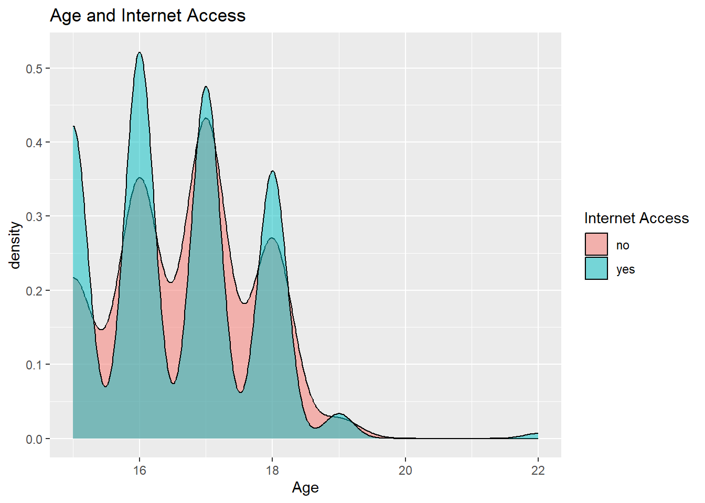
ggplot(data = combined_data, aes(x = absences.x, fill = internetF)) +geom_density(alpha =0.5) +labs(x ="Absenses", title ="Absenses and Internet Access") +scale_fill_discrete("Internet Access")
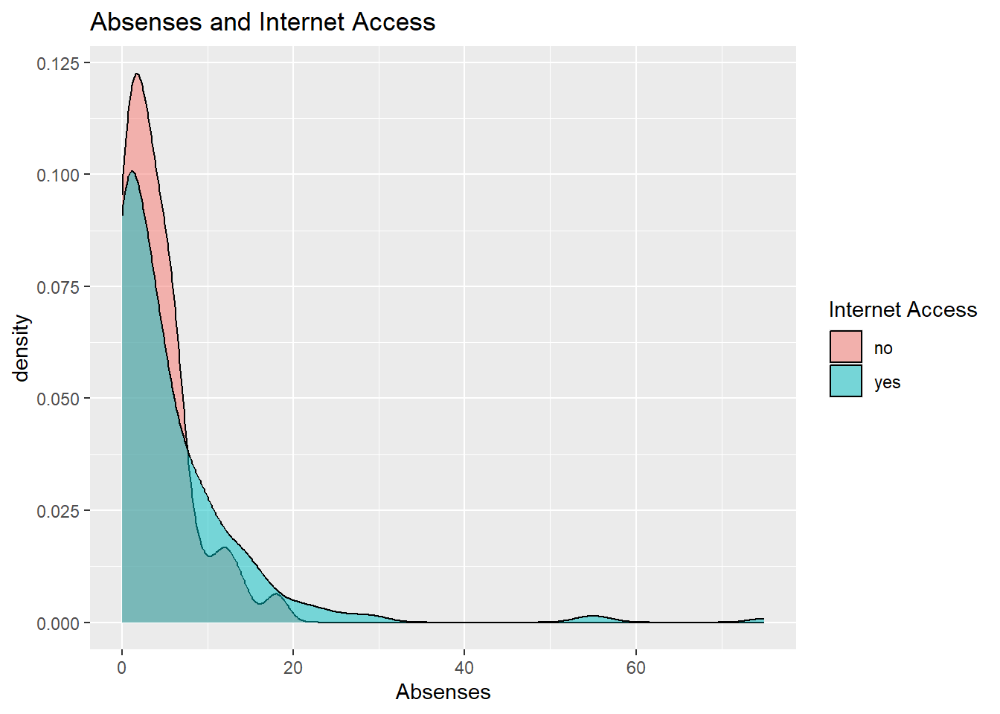
Box plot of age and absenses by internet access. Here we see the spread of absenses with internet is a lot wider than without internet.
ggplot(data = combined_data, aes(x = age, fill = internetF)) +geom_boxplot() +labs(x ="Age", title ="Age and Internet Access") +scale_fill_discrete("Internet Access")
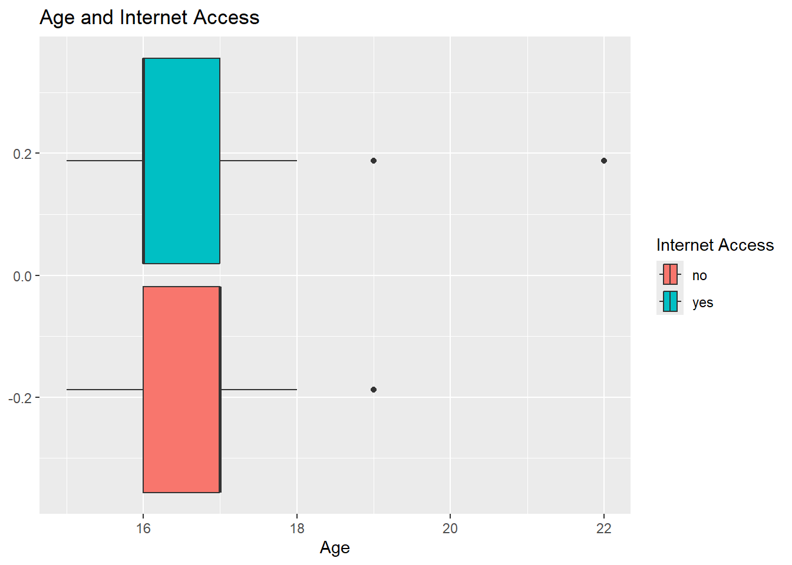
ggplot(data = combined_data, aes(x = absences.x, fill = internetF)) +geom_boxplot() +labs(x ="Absenses", title ="Absenses and Internet Access") +scale_fill_discrete("Internet Access")
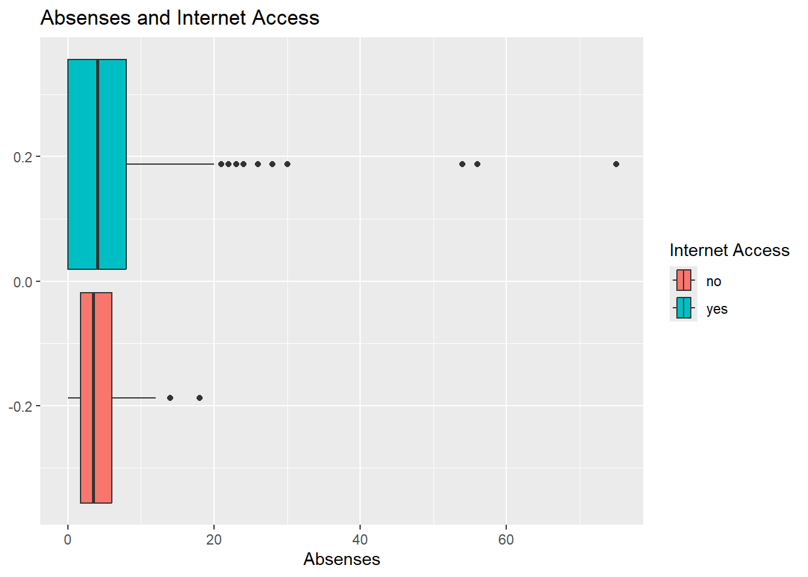
Creating scatter plots of age and absenses with G3.The whole numbers aspect of this data makes the scatter plot seem not as random, therefore it is difficult to determine a pattern or trend.
ggplot(data = combined_data, aes(x = age, y = G3.x, color = internetF)) +geom_point() +labs(x ="Age", y ="Final Grade", title ="Age and Final Grade") +scale_color_discrete("Internet Access")
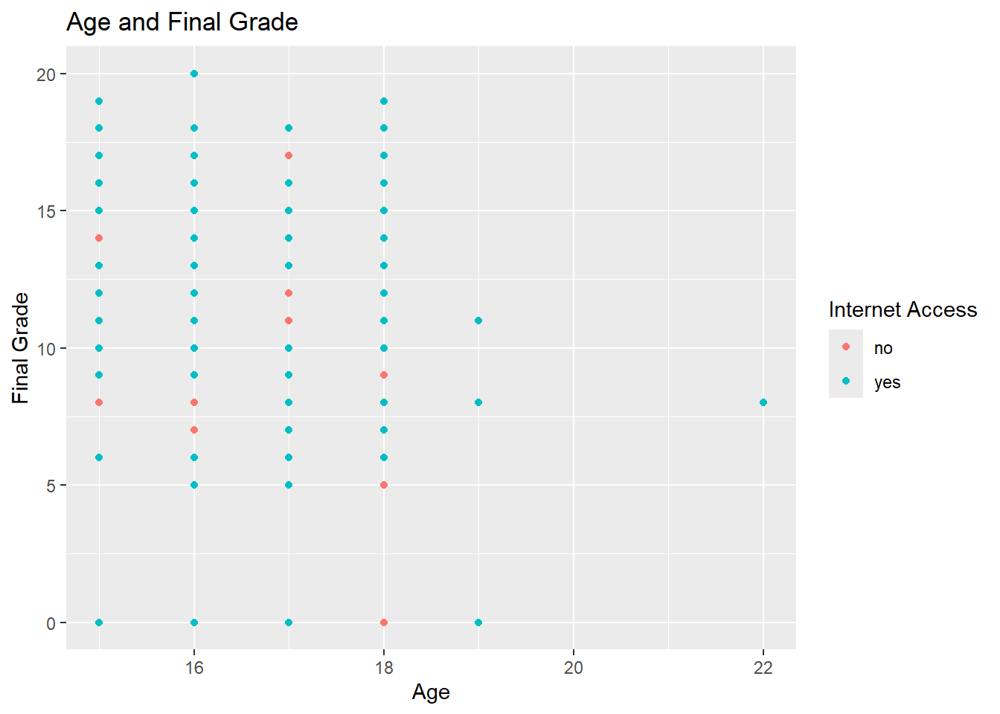
ggplot(data = combined_data, aes(x = absences.x, y = G3.x, color = internetF)) +geom_point() +labs(x ="Absenses", y ="Final Grade", title ="Absenses and Final Grade") +scale_color_discrete("Internet Access")
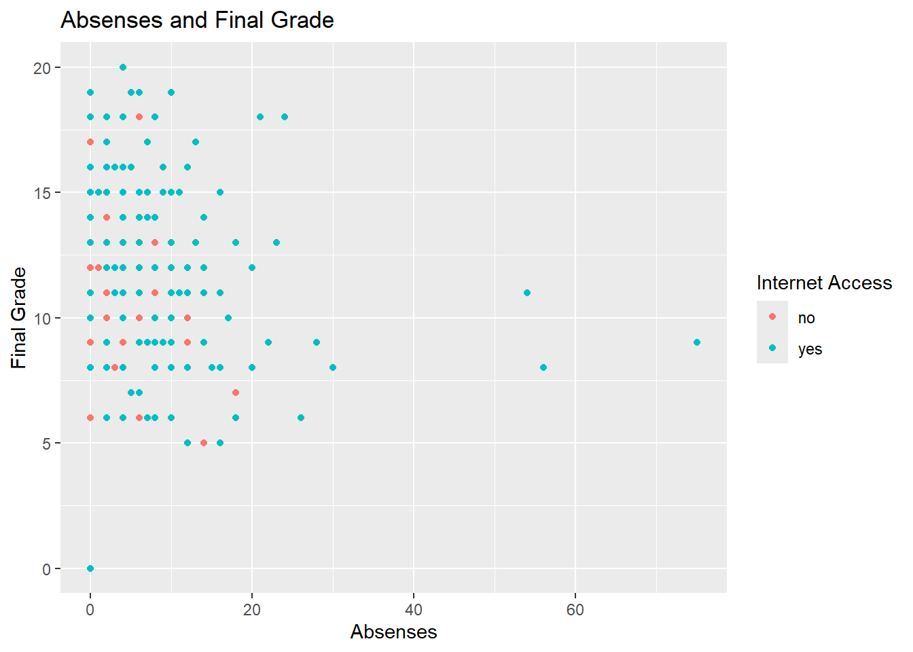
Creating scatter plots of the same variables but with faceting on health. The second graph of absenses and health is interesting because I would have assumed people with poor health would have higher rates of absenses (doesn’t seem to be the case).
ggplot(data = combined_data, aes(x = age, y = G3.x, color = internetF)) +geom_point() +labs(x ="Age", y ="Final Grade", title ="Age and Final Grade") +scale_color_discrete("Internet Access") +facet_wrap(~ health)
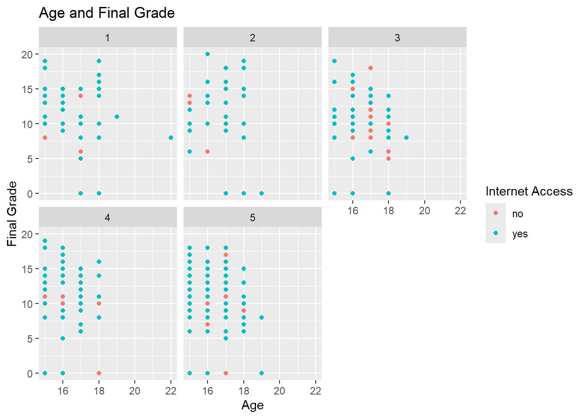
ggplot(data = combined_data, aes(x = absences.x, y = G3.x, color = internetF)) +geom_point() +labs(x ="Absenses", y ="Final Grade", title ="Absenses and Final Grade") +scale_color_discrete("Internet Access") +facet_wrap(~ health)
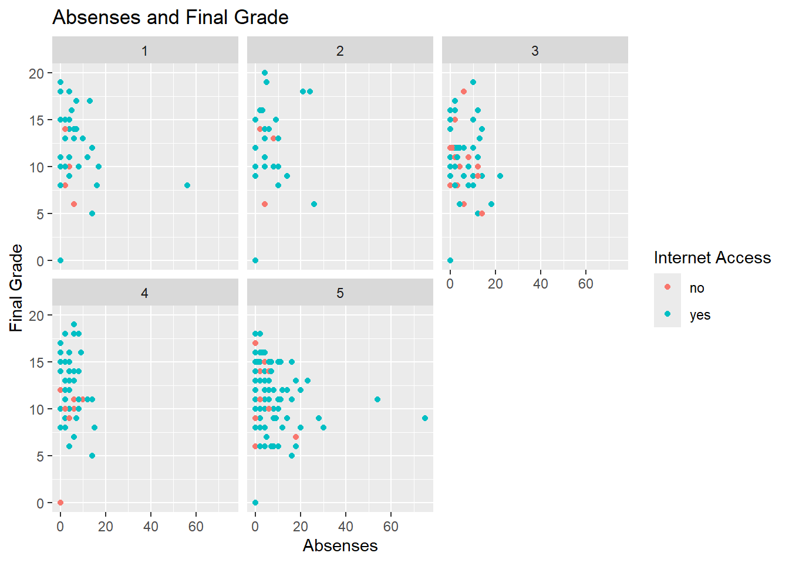
Creating scatter plots of the same variables but with faceting on higher and guardian. Everyone who reported having no internet at home wants to take higher education.
ggplot(data = combined_data, aes(x = age, y = G3.x, color = internetF)) +geom_point() +labs(x ="Age", y ="Final Grade", title ="Age and Final Grade Based on Guardian and Higher Education Intent") +scale_color_discrete("Internet Access") +facet_wrap(higher ~ guardian)
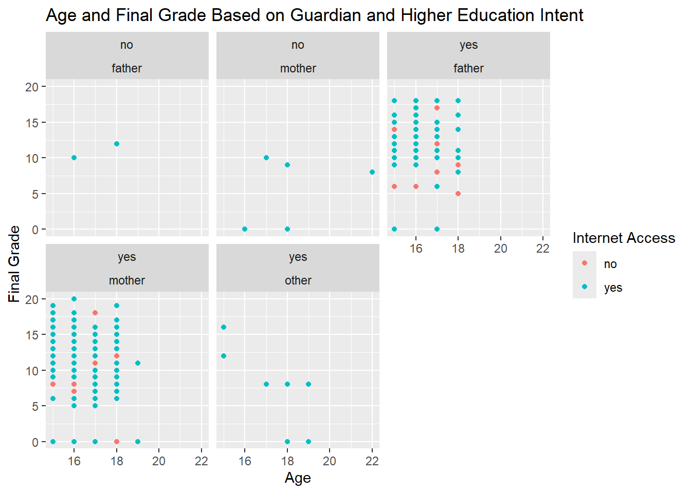
ggplot(data = combined_data, aes(x = absences.x, y = G3.x, color = internetF)) +geom_point() +labs(x ="Absenses", y ="Final Grade", title ="Absenses and Final Grade Based on Guardian and Higher Education Intent") +scale_color_discrete("Internet Access") +facet_wrap(higher ~ guardian)